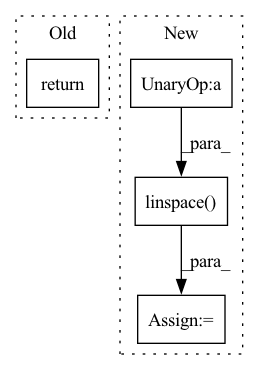

Pattern ID :38638

Before Change
def get_gaussian_kernel2d(kernel_size, sigma: float, normalize: bool = True):
kernel1d = get_gaussian_kernel1d(kernel_size, sigma, normalize)
return torch.mm(kernel1d[:, None], kernel1d[None, :])
After Change
def get_gaussian_kernel2d(kernel_size, sigma: float, normalize: bool = True):
ksize_half = (kernel_size - 1) * 0.5
xs = torch.linspace(-ksize_half, ksize_half, steps=kernel_size)
ys = torch.linspace(-ksize_half, ksize_half, steps=kernel_size)
x, y = torch.meshgrid(xs, ys, indexing="xy")
pdf = torch.exp(-0.5 * ((x * x + y * y) / (sigma * sigma)))
In pattern: SUPERPATTERN
Frequency: 3
Non-data size: 4
Instances
Fragment ID: 110512023
Project Name: ffiirree/cv-models
Commit Name: b12094ddf56c50ca8e40834f1a03d076a93c5950
Time: 2022-11-22
Author: ice_qi@163.com
File Name: cvm/models/ops/functional.py
M Class Name: AnonimousClass
N Class Name: AnonimousClass
M Method Name: get_gaussian_kernel2d(3)
N Method Name: get_gaussian_kernel2d(3)
M Parent Class:
N Parent Class:
M File Name: cvm/models/ops/functional.py
N File Name: cvm/models/ops/functional.py
M Start Line: 42
M End Line: 43
N Start Line: 44
N End Line: 53
'>
Before Change
x = torch.linspace(-range_lim, range_lim, n_pts, device=device)
xx, yy = torch.meshgrid(x, x)
xy = torch.stack((xx, yy), dim=-1)
return xy
def plot_density(p, n_pts=1000, range_lim=10, figsize=(7, 7), title=None, ax=None):
After Change
with `n_pts` discretizations.
x = torch.linspace(-range_lim, range_lim, n_pts, device=device)
y = torch.linspace(-range_lim, range_lim, n_pts, device=device)
xx, yy = torch.meshgrid(x, y)
xy = torch.stack((xx, yy), dim=-1)
return xy.transpose(0, 1) // indexing="xy"
'>
Fragment ID: 110512010
Project Name: yanndubs/lossyless
Commit Name: debd34d080a17d3d2ca9959b57723fd9355dfa17
Time: 2021-01-14
Author: yanndubois96@gmail.com
File Name: lossyless/helpers.py
M Class Name: AnonimousClass
N Class Name: AnonimousClass
M Method Name: setup_grid(3)
N Method Name: setup_grid(3)
M Parent Class:
N Parent Class:
M File Name: lossyless/helpers.py
N File Name: lossyless/helpers.py
M Start Line: 326
M End Line: 329
N Start Line: 327
N End Line: 330
'>
Before Change
@torch.no_grad()
def sample(self, batch_size = 16):
return self.sample_all_timesteps((batch_size, self.channels, self.image_size, self.image_size))
// training
After Change
shape = (batch_size, self.channels, self.image_size, self.image_size)
images = torch.randn(shape, device = self.device)
steps = torch.linspace(1., 0., 100 + 1, device = self.device)
for i in tqdm(range(100), desc = "sampling loop time step", total = 100):
times = steps[i]
times_next = steps[i + 1]
images = images
return unnormalize_to_zero_to_one(images)
'>
Fragment ID: 110512011
Project Name: lucidrains/denoising-diffusion-pytorch
Commit Name: be2bd8d32031800831a3e6bf15cb7f8cb2a65a94
Time: 2022-06-28
Author: lucidrains@gmail.com
File Name: denoising_diffusion_pytorch/elucidated_diffusion.py
M Class Name: ElucidatedDiffusion
N Class Name: ElucidatedDiffusion
M Method Name: sample(2)
N Method Name: sample(2)
M Parent Class: nn.Module
N Parent Class: nn.Module
M File Name: denoising_diffusion_pytorch/elucidated_diffusion.py
N File Name: denoising_diffusion_pytorch/elucidated_diffusion.py
M Start Line: 138
M End Line: 138
N Start Line: 121
N End Line: 131